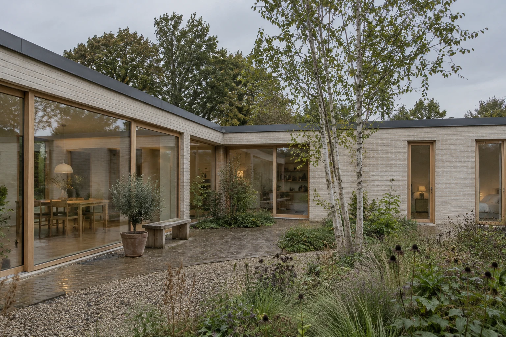

Compact housing / Roskilde / 2025
Courtyard House
More shared garden. Fewer leftover rooms.

- Place
- Roskilde, Denmark
- Design year
- 2025
- Illustrative area
- 148 m²
- Approach
- New build
- Status
- Fictional design study
The starting question
More shared garden. Fewer leftover rooms.
A household wanted a modest home in which everyday life could open onto a sheltered garden. The proposal gathers rooms into two low wings rather than spreading the same programme across a larger footprint.
The imagined site asks a simple question: how can living spaces share light and a garden while bedrooms keep a quieter relationship to the house?
Let the garden organise the plan
An L-shaped arrangement holds a planted court. The living room, dining space and main circulation all refer to it.
Separate different rhythms
The shared living wing and quieter bedroom wing meet at the entrance, reducing the need to cross one room to reach another.
Use a small material family
Pale brick, timber-framed openings and a restrained roof edge connect the outer enclosure with the interior.
An organising idea
The plan explains
the priorities.
Shared and quiet spaces make two sides of one garden. The court is part of everyday circulation.
This diagram illustrates relationships only. It is not a measured survey, technical drawing or access assessment.
Material and responsibility
A small family of moves.
- Enclosure
- Pale brick and a simple dark roof edge
- Openings
- Timber-framed glazing facing the court
- To resolve
- Site survey, engineering, detailed envelope and permissions
Design scope: Brief development, spatial concept and a coordinated design intent.
A fictional new-build study, not a catalogue house or a ready-to-build plan. The area is illustrative; no actual site, cost or permission is represented.
What is your
starting question?
Use this project as a reference for a conversation. Your place, scope and priorities will be different.
Prepare a conversation